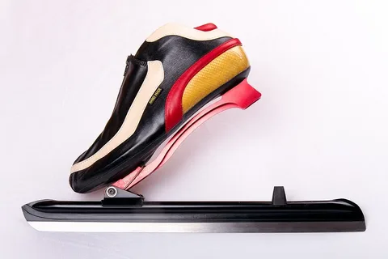
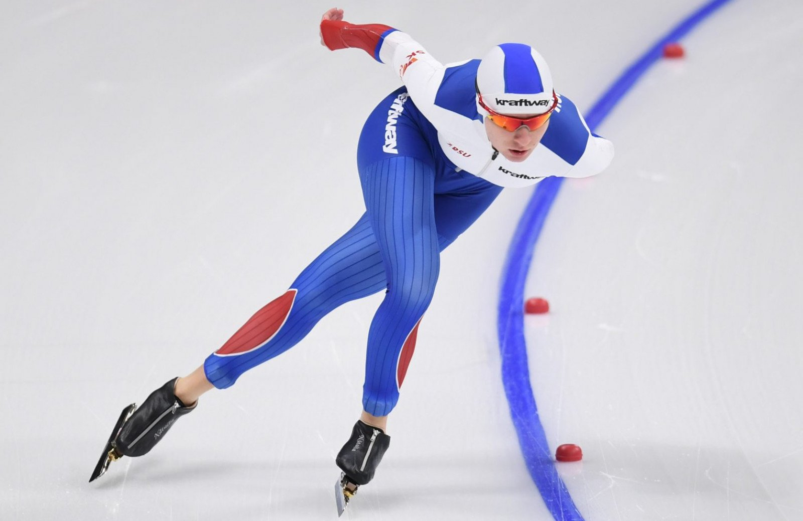
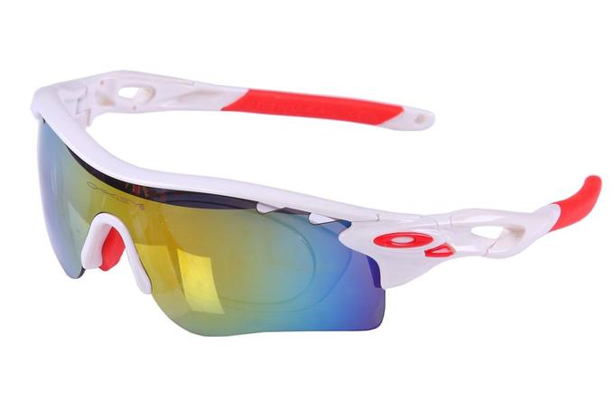

Коньки-клапы (клап-скейт)
Для конькобежного спорта придумали особые коньки-клапы (клап-скейт) – специальные коньки для классического бега. Лезвие на таких коньках зафиксировано специальным пружинным шарниром и только на передней части ботинка. Это сделано специально для увеличения фазы отталкивания, а, следовательно, позволяет добиться более высокой скорости.
Костюм (комбинезон)
Костюм (комбинезон) для конькобежного спорта должен повторять естественные формы тела спортсмена. Вставки или элементы изменяющие форму тела запрещены. В целях защиты от травм спортсмены могут надевать под комбинезон защиту голени, лодыжки и коленей.
Очки для конькобежного спорта
Использование конькобежных очков оградит глаза от сильного ветра, станет преградой для маленьких осколков льда, появление которых неизбежно в процессе катания на скоростях. Они тоже должны плотно прилегать к голове, не соскальзывать при активном движении спортсмена. От падения очков, их потери избавит специальное крепление на затылке. В комплекте к ним идут несколько сменных линз, которые меняют с учетом погодных условий: позолоченные используют на ярком солнце, розовые — во время повышенной облачности.